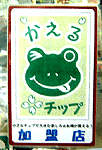
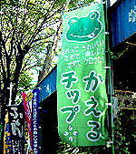

|
買い物はカエルロード商店会！ 【東京立川発=立川市商店街連合会の職員・石井同志記者】ほじめまして、立川市商店街連合会の職員で石井と申します。エルロード商店会の画像を送ります。この商店会は当市の北東部、若葉町というところにあり、立派なけやき並木が自慢?の商店会です。
 【東京発=孝男同志記者】平成12年7月29日号で紹介したかわいいカエルのデザインで知られる、かえるチップのパンフレットをお届けします。
ケロちゃんは７才オス、座右の銘はケロッと忘れる！【全国かえる奉賛会】孝男同志と商店会職員本人からのレポートでさらに詳細がわかった。エルロード商店会をこの際、カエルロード商店会に改称してくれると、さらにすっきりするぞーっ(笑)ところでパンフによると、カエルチップは商店会の通貨だそうで、買い物１００円ごとに最低一枚さしあげるそうだ。いろいろなイベントに参加できるらしい。気になるカエルの名前は、ケロちゃん。オス７才で、生まれは玉川上水。嫌いなものは雷で、好きなのはイチゴミルク。座右の銘は、ケロッと忘れる！跳ねるが勝ち！だそうだ。
カエラー推奨商店会に指定【全国かえる奉賛会】カエルキャラを前面に打ち出した、エルロード商店会を全国かえる奉賛会推奨商店会に指定するので、全国のカエラーのみなさん。東京に行ったら立川市によって、商店会でどんどん買い物をしよう。中華料理の店の欅菜館では、毎月１５日がカエルチップ３倍デーらしいぞ！
お中元シーズンは、飛行機で立川に行って買い物しして、カエルチップを集めよう。
カエルを飛ばしゲーム出現！【日本発=kei-f同志記者】カエルのゲームが発売されるそうです。その名も『ケロケロキング』!!ゴルフではなく、カエルを飛ばす「ケロフ」を題材にしたゲームで、ケロフの王者を目指すというものです。しかも舞台は惑星カエルーナ。 カエルを飛ばすというのは乱暴と言うこともあるかも知れませんが、その飛距離や跳び方がカエルの状態で変化するという人蛙一体のゲームらしいのです!! 紹介のサイトは一週ごとに内容を変化されるらしいので、来週はないかも知れません。 かえる芸人も発見!?【日本発=kei-f同志記者】パペットマペットという方らしいです。『かえるくん』、『うしくん』というマペットを操って、どちらかというとシュール系のネタの芸人さんらしいです。このページの紹介によると「うしくんのほうが人気がある」とのことですが、ぜひ、かえるくんにも奮起していただいて、爆発的人気を獲得していただきたいモノです。

カエルサボテン第３期発売迫る！【けろテン市場】過去２回の売り出しがすべて即日完売という伝説を作っている、カエルサボテンの第３期発売が間近に迫っている。
今回は、通常のサボテンスタイルとともに、こどもサボテンや携帯ストラップもあるそうだ。そして、ポストカード４枚組みが完成したそうなので、けろテン市場の告知を見逃さないように注意しよう。
１１１１１１人目に記念品を贈呈！【全国かえる奉賛会】１１１１１１人目に記念品を贈呈するぞー。例によってカウンタがまさに、その数字を示したラッキーな人は、大王様へのメールで自己申告してください。
投稿採用者に武功カエル徽章を授与！ |
かえる古新聞過去に取り上げた記事を見出し付きで一覧したい人は、ここをクリック◆創刊号を見る◆先週号を見る◆話題の号を見る◆かえる新聞の昔を読む
|
私も入っています。。全国かえる奉賛会
大王様に会うには、このバナーをクリック。ずっと奥に写真館があるぞ。全国かえる奉賛会に入会するには、自分のホームページのどこかに、下の部分を追加するとバナーがリンク付きで表示されるぞ。どんどん入会しましょー |


|